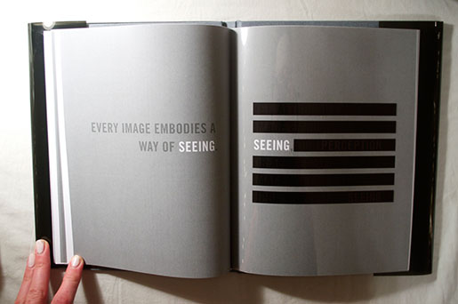
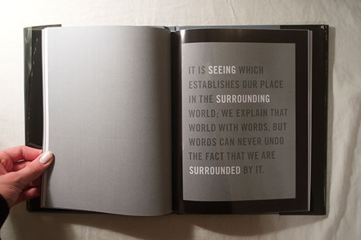
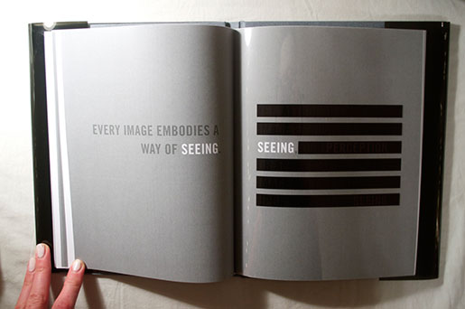
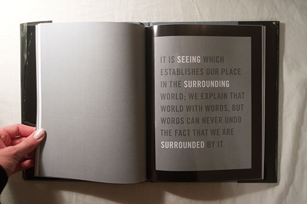

Typeset book consisting of Some Virtues of Design by Gui Bonsiepe, paired with quotes from Ways of Seeing by John Berger. Clear sheets of acetate used to enhance the viewers experience and interaction with typography.


 


